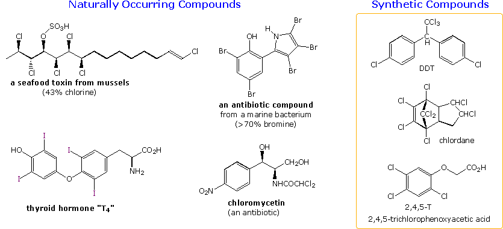
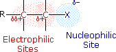
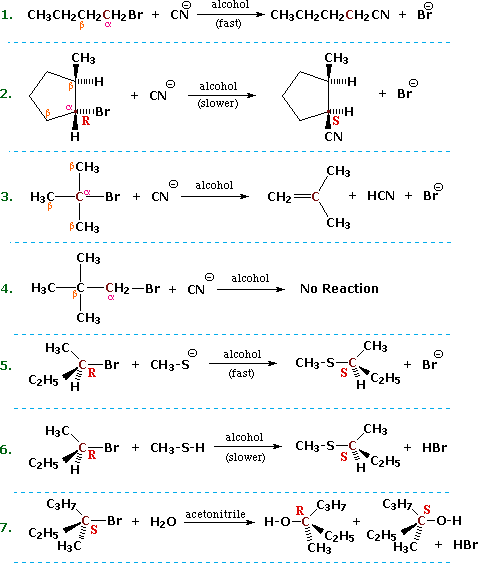
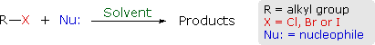
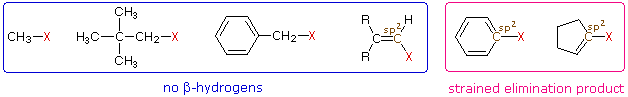
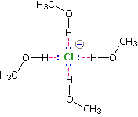
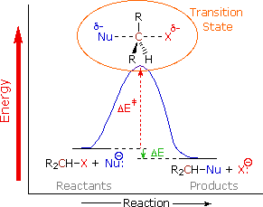
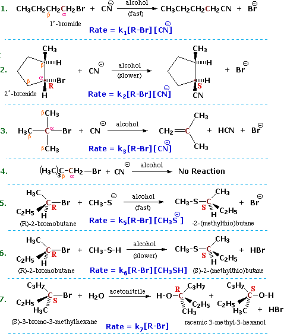

Halogen containing organic compounds are relatively rare in terrestrial plants and animals. The thyroid hormones T3 and T4 are exceptions; as is fluoroacetate, the toxic agent in the South African shrub Dichapetalum cymosum, known as "gifblaar". However, the halogen rich environment of the ocean has produced many interesting natural products incorporating large amounts of halogen. Some examples are shown below. The ocean is the largest known source for atmospheric methyl bromide and methyl iodide. Furthermore, the ocean is also estimated to supply 10-20% of atmospheric methyl chloride, with other significant contributions coming from biomass burning, salt marshes and wood-rotting fungi. Many subsequent chemical and biological processes produce poly-halogenated methanes.

Synthetic organic halogen compounds are readily available by direct halogenation of hydrocarbons and by addition reactions to alkenes and alkynes. Many of these have proven useful as intermediates in traditional synthetic processes. Some halogen compounds, shown in the box. have been used as pesticides, but their persistence in the environment, once applied, has led to restrictions, including banning, of their use in developed countries. Because DDT is a cheap and effective mosquito control agent, underdeveloped countries in Africa and Latin America have experienced a dramatic increase in malaria deaths following its removal, and arguments are made for returning it to limited use. 2,4,5-T and 2,4-D are common herbicides that are sold by most garden stores. Other organic halogen compounds that have been implicated in environmental damage include the polychloro- and polybromo-biphenyls (PCBs and PBBs), used as heat transfer fluids and fire retardants; and freons (e.g. CCl2F2 and other chlorofluorocarbons) used as refrigeration gases and fire extinguishing agents.
The functional group of alkyl halides is a carbon-halogen bond, the common halogens being fluorine, chlorine, bromine and iodine. With the exception of iodine, these halogens have electronegativities significantly greater than carbon. Consequently, this functional group is polarized so that the carbon is electrophilic and the halogen is nucleophilic, as shown in the drawing on the right.

The characteristics noted above lead us to anticipate certain types of reactions that are likely to occur with alkyl halides. In describing these, it is useful to designate the halogen-bearing carbon as alpha and the carbon atom(s) adjacent to it as beta, as noted in the first four equations shown below. Replacement or substitution of the halogen on the α-carbon (colored maroon) by a nucleophilic reagent is a commonly observed reaction, as shown in equations 1, 2, 5, 6 & 7 below. Also, since the electrophilic character introduced by the halogen extends to the β-carbons, and since nucleophiles are also bases, the possibility of base induced H-X elimination must also be considered, as illustrated by equation 3. Finally, there are some combinations of alkyl halides and nucleophiles that fail to show any reaction over a 24 hour period, such as the example in equation 4. For consistency, alkyl bromides have been used in these examples. Similar reactions occur when alkyl chlorides or iodides are used, but the speed of the reactions and the exact distribution of products will change.

In order to understand why some combinations of alkyl halides and nucleophiles give a substitution reaction, whereas other combinations give elimination, and still others give no observable reaction, we must investigate systematically the way in which changes in reaction variables perturb the course of the reaction. The following general equation summarizes the factors that will be important in such an investigation.

One conclusion, relating the structure of the R-group to possible products, should be immediately obvious. If R- has no beta-hydrogens an elimination reaction is not possible, unless a structural rearrangement occurs first. The first four halides shown on the left below do not give elimination reactions on treatment with base, because they have no β-hydrogens. The two halides on the right do not normally undergo such reactions because the potential elimination products have highly strained double or triple bonds. It is also worth noting that sp2 hybridized C–X compounds, such as the three on the right, do not normally undergo nucleophilic substitution reactions, unless other functional groups perturb the double bond(s).

Using the general reaction shown above as our reference, we can identify the following variables and observables.
R change α-carbon from 1º to 2º to 3º if the α-carbon is a chiral center, set as (R) or (S) X change from Cl to Br to I (F is relatively unreactive) Nu: change from anion to neutral; change basicity; change polarizability Solvent polar vs. non-polar; protic vs. non-protic
Products substitution, elimination, no reaction. Stereospecificity if the α-carbon is a chiral center what happens to its configuration? Reaction Rate measure as a function of reactant concentration.
When several reaction variables may be changed, it is important to isolate the effects of each during the course of study. In other words: only one variable should be changed at a time, the others being held as constant as possible. For example, we can examine the effect of changing the halogen substituent from Cl to Br to I, using ethyl as a common R–group, cyanide anion as a common nucleophile, and ethanol as a common solvent. We would find a common substitution product, C2H5–CN, in all cases, but the speed or rate of the reaction would increase in the order: Cl < Br < I. This reactivity order reflects both the strength of the C–X bond, and the stability of X(–) as a leaving group, and leads to the general conclusion that alkyl iodides are the most reactive members of this functional class.
Electrophile: An electron deficient atom, ion or molecule that has an affinity for an electron pair, and will bond to a base or nucleophile. Nucleophile: An atom, ion or molecule that has an electron pair that may be donated in forming a covalent bond to an electrophile (or Lewis acid).
If we use a common alkyl halide, such as methyl bromide, and a common solvent, ethanol, we can examine the rate at which various nucleophiles substitute the methyl carbon. Nucleophilicity is thereby related to the relative rate of substitution reactions at the halogen-bearing carbon atom of the reference alkyl halide. The most reactive nucleophiles are said to be more nucleophilic than less reactive members of the group. The nucleophilicities of some common Nu:(–) reactants vary as shown in the following
The reactivity range encompassed by these reagents is over 5,000 fold, thiolate being the most reactive. Note that by using methyl bromide as the reference substrate, the complication of competing elimination reactions is avoided. The nucleophiles used in this study were all anions, but this is not a necessary requirement for these substitution reactions. Indeed reactions 6 & 7, presented at the beginning of this section, are examples of neutral nucleophiles participating in substitution reactions. The cumulative results of studies of this kind has led to useful empirical rules pertaining to nucleophilicity:
(i) For a given element, negatively charged species are more nucleophilic (and basic) than are equivalent neutral species. (ii) For a given period of the periodic table, nucleophilicity (and basicity) decreases on moving from left to right. (iii) For a given group of the periodic table, nucleophilicity increases from top to bottom (i.e. with increasing size), although there is a solvent dependence due to hydrogen bonding. Basicity varies in the opposite manner.
Solvation of nucleophilic anions markedly influences their reactivity.

Note that this order is roughly the order of increasing basicity.
Some of the most important information concerning nucleophilic substitution and elimination reactions of alkyl halides has come from studies in which the structure of the alkyl group has been varied. If we examine a series of alkyl bromide substitution reactions with the strong nucleophile thiocyanide (SCN) in ethanol solvent, we find large decreases in the rates of reaction as alkyl substitution of the alpha-carbon increases. Methyl bromide reacts 20 to 30 times faster than simple 1º-alkyl bromides, which in turn react about 20 times faster than simple 2º-alkyl bromides, and 3º-alkyl bromides are essentially unreactive or undergo elimination reactions. Furthermore, β-alkyl substitution also decreases the rate of substitution, as witnessed by the failure of neopentyl bromide, (CH3)3CCH2-Br (a 1º-bromide), to react. Alkyl halides in which the alpha-carbon is a chiral center provide additional information about these nucleophilic substitution reactions. Returning to the examples presented at the beginning of this section, we find that reactions 2, 5 & 6 demonstrate an inversion of configuration when the cyanide nucleophile replaces the bromine. Other investigations have shown this to be generally true for reactions carried out in non-polar organic solvents, the reaction of (S)-2-iodobutane with sodium azide in ethanol being just one example ( in the following equation the alpha-carbon is maroon and the azide nucleophile is blue). Inversion of configuration during nucleophilic substitution has also been confirmed for chiral 1º-halides of the type RCDH-X, where the chirality is due to isotopic substitution.
We can now piece together a plausible picture of how nucleophilic substitution reactions of 1º and 2º-alkyl halides take place.

The two models displayed below start as methyl bromide, on the left, and ethyl bromide, on the right. These may be replaced by isopropyl, tert-butyl, neopentyl, and benzyl bromide models by pressing the appropriate buttons. (note that when first activated, this display may require clicking twice on the selected button.) In each picture the nucleophile is designated by a large violet sphere, located 3.75 Angstroms from the alpha-carbon atom (colored a dark gray), and located exactly opposite to the bromine (colored red-brown). This represents a point on the trajectory the nucleophile must follow if it is to bond to the back-side of the carbon atom, displacing bromide anion from the front face. With the exception of methyl and benzyl, the other alkyl groups present a steric hindrance to the back-side approach of the nucleophile, which increases with substitution alpha and beta to the bromine. The hydrogen (and carbon) atoms that hinder the nucleophile's approach are colored a light red. The magnitude of this steric hindrance may be seen by moving the models about in the usual way, and is clearly greatest for tert-butyl and neopentyl, the two compounds that fail to give substitution reactions.
The stereoselectivity of SN2 reactions is in large part due to a stereoelectronic effect. This important factor will be described by clicking here.
If a chemical reaction proceeds by more than one step or stage, its overall velocity or rate is limited by the slowest step, the rate-determining step. This "bottleneck concept" has analogies in everyday life. For example, if a crowd is leaving a theater through a single exit door, the time it takes to empty the building is a function of the number of people who can move through the door per second. Once a group gathers at the door, the speed at which other people leave their seats and move along the aisles has no influence on the overall exit rate. When we describe the mechanism of a chemical reaction, it is important to identify the rate-determining step and to determine its "molecularity". The molecularity of a reaction is defined as the number of molecules or ions that participate in the rate determining step. A mechanism in which two reacting species combine in the transition state of the rate-determining step is called bimolecular. If a single species makes up the transition state, the reaction would be called unimolecular. The relatively improbable case of three independent species coming together in the transition state would be called termolecular.
One way of investigating the molecularity of a given reaction is to measure changes in the rate at which products are formed or reactants are lost, as reactant concentrations are varied in a systematic fashion. This sort of study is called kinetics, and the goal is to write an equation that correlates the observed results. Such an equation is termed a kinetic expression, and for a reaction of the type: A + B –––> C + D it takes the form: Reaction Rate = k[A] n[B] m, where the rate constant k is a proportionality constant that reflects the nature of the reaction, [A] is the concentration of reactant A, [B] is the concentration of reactant B, and n & m are exponential numbers used to fit the rate equation to the experimental data. Chemists refer to the sum n + m as the kinetic order of a reaction. In a simple bimolecular reaction n & m would both be 1, and the reaction would be termed second order, supporting a mechanism in which a molecule of reactant A and one of B are incorporated in the transition state of the rate-determining step. A bimolecular reaction in which two molecules of reactant A (and no B) are present in the transition state would be expected to give a kinetic equation in which n=2 and m=0 (also second order). The kinetic expressions found for the reactions shown at the beginning of this section are written in blue in the following equations. Each different reaction has its own distinct rate constant, k#. All the reactions save 7 display second order kinetics, reaction 7 is first order.

It should be recognized and remembered that the molecularity of a reaction is a theoretical term referring to a specific mechanism. On the other hand, the kinetic order of a reaction is an experimentally derived number. In ideal situations these two should be the same, and in most of the above reactions this is so. Reaction 7 above is clearly different from the other cases reported here. It not only shows first order kinetics (only the alkyl halide concentration influences the rate), but the chiral 3º-alkyl bromide reactant undergoes substitution by the modest nucleophile water with extensive racemization. Note that the acetonitrile cosolvent does not function as a nucleophile. It serves only to provide a homogeneous solution, since the alkyl halide is relatively insoluble in pure water. One of the challenges faced by early workers in this field was to explain these and other differences in a rational manner.
Two discrete mechanisms for nucleophilic substitution reactions will be described in the next section.
This page is the property of The Edvibe Team. Comments, questions and errors should be sent to contact@edvibe.co.ke. These pages are provided to the IOCD to assist in capacity building in chemical education. 05/05/2013